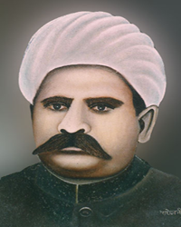
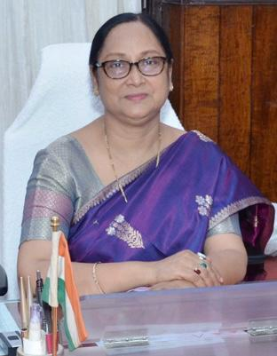
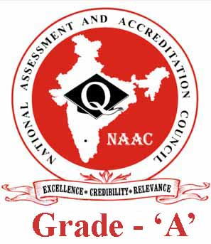

Sri Langat Singh

Prof. Kanupriya
Langat Singh College, popularly known as L. S. College, is the premier and oldest higher educational institution of North Bihar having an indelible footprint in educational, literary, social and political life of Bihar. It was founded in 1899 in the backdrop of emerging Indian nationalism by broader community support. Babu Langat Singh played the most prominent part in its establishment. In the year of 1900, the college was affiliated to Calcutta University. It was declared Government College in 1915 and subsequently affiliated to Patna University in 1917.In 1952, Bihar University was established with headquarters at Muzaffarpur and the college was affiliated to this new University. It is quite evident that the College is much older than the present B. R. A. Bihar University, Muzaffarpur. The Post Graduate Departments of B. R. A.Bihar University got bifurcated from this institution in 1979. From 1984 post graduate studies of various streams have been restored at this college. The college has a huge and magnificent building incorporating the feature of Indo- Sarcenic architectural style. It was modelled after Balliol College of Oxford. The chief objective of the college, since its inception, has been to shape the young minds with the urge for creativity, spirit of tolerance and scientific temper. To cope with the changing needs of society and economy, vocational courses have been introduced along with conventional courses. Empowering the youth for capacity building, inculcating basic moral values, community development and fair access to poor and socially disadvantaged group of human resource in the light of changing economic, social & cultural development. In 2022 the Observatory and Planetarium of the college have been enlisted in Astronomical Heritage by UNESCO.
